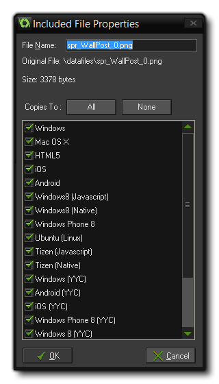

GameMaker: Studio 并不只能局限于使用那些你在IDE中创建的资源，事实上在主界面的资源列表中有一项专门的分类叫做 Included Files。在这里你可以向 GameMaker: Studio 中加载各种类型的文件（你甚至可以给它们创建子文件夹)。这些文件将会被作为游戏的一部分打包进目标平台可执行文件中。举例来说，在生成 windows 平台游戏时这些文件会被打包进 *.exe 文件中并且在运行时被解包出来，而在 HTML5 平台这些文件会被包含在 html5_game 文件夹中并且储存在服务器上。
要向资源中添加一个文件，你必须右击资源列表中的 Included Files 项，然后选择 Create Included File；或者如果你想要创建一个文件夹来储存其它文件，那么选择 Create Group。随后软件会提示你添加一个或多个你选择的文件到列表中。当文件被添加到列表中后，你可以右击它选择 "Properties" 来编辑这个文件的属性： 在这里你可以修改 File Name 这一项来重命名文件。在文件名下方还有一系列选项用来设置这个文件需要被包含进哪些目标平台的程序中。如果你希望仅仅在 你用浏览器运行这个游戏时这个文件才会被解包出来，那么你应当只选择“HTML5”这一项；如果你只希望它在安卓或IOS平台上使用那么你应当只选择这两项；其它同理。如果你没有选择任何目标平台，那么这个文件就根本不会被导出至游戏中。这个功能在你想要用 配置管理器 来储存特定的配置和解包相关文件时显得尤为有用。注意，你可以在属性窗口中点击相应按钮来全选、全不选目标平台。
一旦你点击了“OK”后文件就会被保存在你当前工程 *.gmx 文件夹下的一个叫做 data-files 的文件夹中。 如果你在添加文件时更改了文件的名字，那么这个文件将会用新的名称保存。请注意从现在开始你应当只去修改这个文件夹下的文件而不是你的原始文件（除非你打算重新包含它们，但是通常这都是不必要的）。
| Converted from CHM to HTML with chm2web Pro 2.85 (unicode) |